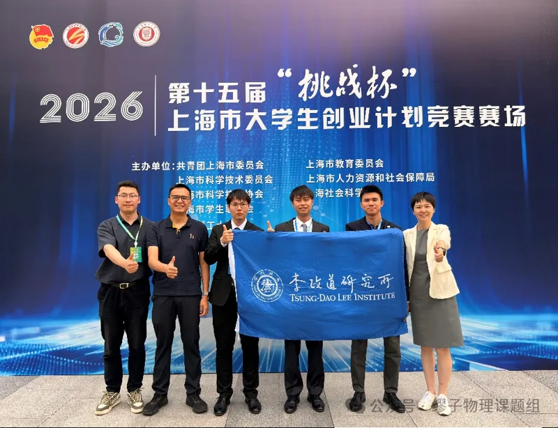
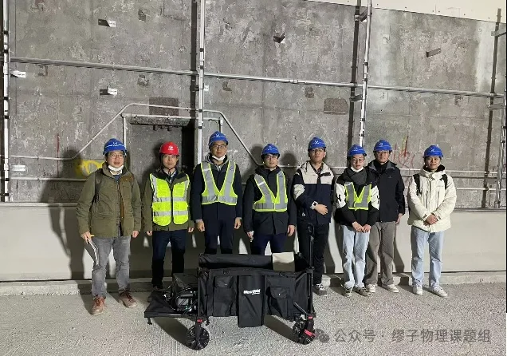
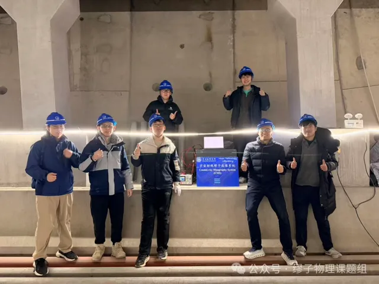
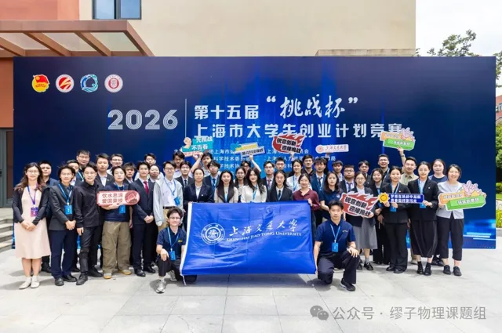

From 5 to 7 June 2026, the finals of the 15th “Challenge Cup” Shanghai College Students’ Entrepreneurship Plan Competition were held at the Jungong Road campus of the University of Shanghai for Science and Technology, where Shanghai Jiao Tong University took home the overall Winner’s Cup. Competing for the first time, the Tsung-Dao Lee Institute (TDLI) won a First Prize with our group’s muography project.


The winning project, “Muon imaging — safeguarding the development of megacities”, was carried out by an interdisciplinary, international team of 11 graduate students from TDLI and the SJTU School of Naval Architecture, Ocean and Civil Engineering, including five international students at TDLI. The team was led by Yinghe Wang, a TDLI PhD student of the class of 2024, and supervised by Kim Siang Khaw and Ailan Che (School of Naval Architecture, Ocean and Civil Engineering), with Min Chen, Deputy General Manager of the Shanghai Geology and Mineral Resources Group, as industry advisor.
The project targets the safety of underground space in megacities. Conventional subsurface surveys struggle to see deep, disturb the ground, are costly and are hard to run continuously; cosmic-ray muon imaging addresses all four, offering a deeper, more precise and more economical way to monitor the ground beneath a city.






Founded in 1999 and held every two years, the “Challenge Cup” China College Students’ Entrepreneurship Plan Competition is often called the “Olympics” of student innovation and entrepreneurship in China. This year’s Shanghai round was organised by the Shanghai Committee of the Communist Youth League together with the Shanghai municipal commissions for education and for science and technology, among others, and hosted by the University of Shanghai for Science and Technology.
2026年6月5日至7日，第十五届“挑战杯”上海市大学生创业计划竞赛决赛在上海理工大学军工路校区举行，上海交通大学捧得优胜杯。李政道研究所首次参赛，凭借课题组的缪子成像项目荣获一等奖。
获奖项目“缪子成像——守护超大城市发展”由来自李政道研究所和上海交通大学船舶海洋与建筑工程学院的11名研究生组成的跨学科、国际化团队完成，其中包括5名李政道研究所的国际学生。团队负责人为李政道研究所2024级博士研究生王赢鹤，指导教师为许金祥和车爱兰（船舶海洋与建筑工程学院），上海地矿集团副总经理Min Chen担任企业导师。
项目聚焦超大城市地下空间安全。传统地下勘探手段存在探测深度有限、对地层有扰动、成本高、难以持续监测等问题；宇宙线缪子成像技术可同时应对这四方面难题，为城市地下监测提供更深、更精准、更经济的解决方案。
“挑战杯”中国大学生创业计划竞赛创办于1999年，每两年举办一届，被誉为中国大学生创新创业领域的“奥林匹克”。本届上海市赛由共青团上海市委员会、上海市教育委员会、上海市科学技术委员会等单位联合主办，上海理工大学承办。